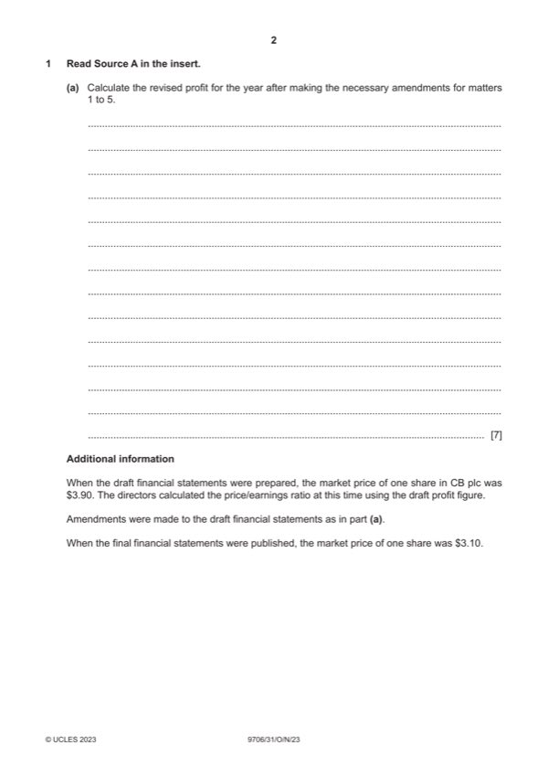

Question 1

Original paper page 2
Part 1(a) — solution
Calculate the revised profit for the year which would be recorded if 7
amendments were made for any of the matters 1 to 5.
Draft profit 148 250
Mark points
- Include the ideas shown in the solution above.
Part 1 — solution
damages (12 000) (1)
Mark points
- Include the ideas shown in the solution above.
Part 1(b) — solution
- = 37.06 cents (1) = 31.21 cents (1) OF
- = 10.52 (1) OF = 9.93 (1) OF
Mark points
- = 37.06 cents (1) = 31.21 cents (1) OF
- = 10.52 (1) OF = 9.93 (1) OF
Part 1(c) — solution
Advise the directors whether or not they should be concerned about the 4
change in the price/earnings ratio. Justify your answer.
Not concerned
The decrease in the ratio is small and may not be significant (1).
The price earnings ratio indicates the demand for the company’s shares and if
there is no immediate plan to issue new shares a change will not have a direct
effect (1).
Concerned
The market is less confident in the prospects of the company (1).
The percentage change is higher for the earnings per share (1).
Accept other valid responses.
Max 3 for comments.
Mark points
- Include the ideas shown in the solution above.
Part 1 — solution
mark for decision supported with comment
Mark points
- Include the ideas shown in the solution above.
Part 1(d) — solution
Explain three measures which the company could take which would 6
cause the gearing ratio to decrease.
Issue new shares (1) to strengthen the equity base of the business / to raise
cash to repay long term loans or debentures. (1)
Revalue non-current assets upwards (1) to increase the reserves of the
company. (1)
Reduce the dividends paid / increase sales volume/increase selling
price/control expenses (1) to increase the retained earnings. (1)
Use any surplus funds / reduce funds tied up in assets (1) to reduce the non-
current liabilities of the company. (1)
Convert long term loans (1) by negotiating with lenders to accept shares in
place of their loans. (1)
Accept other valid responses.
Any three measures for max (2) each
(1 mark for identifying and 1 mark for development)
Mark points
- Include the ideas shown in the solution above.
Part 1(e) — solution
State three other reasons a limited company has for preparing a 3
statement of profit or loss.
It is required by company law / forms part of the statutory accounts (1).
It is required by the tax authorities (1).
It reports to shareholders about how their investment is performing (1).
It provides information for decision making (1).
It can be compared with prior years and with other businesses / ratio analysis
(1).
Accept other valid responses.
Max (3)
2023 Page 8 of 12
9706/31 Cambridge International AS & A Level – Mark Scheme October/November
PUBLISHED 2023
Mark points
- Include the ideas shown in the solution above.
Part 1 — solution
mark for decision supported with a comment.
Accept other valid responses.
Mark points
- Include the ideas shown in the solution above.